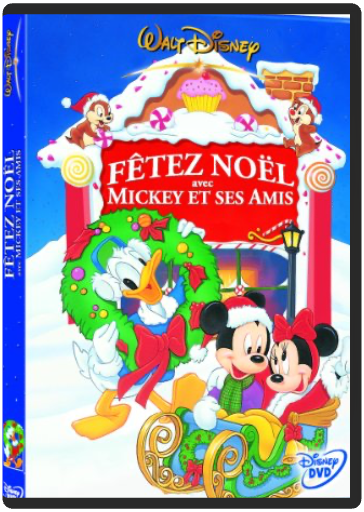
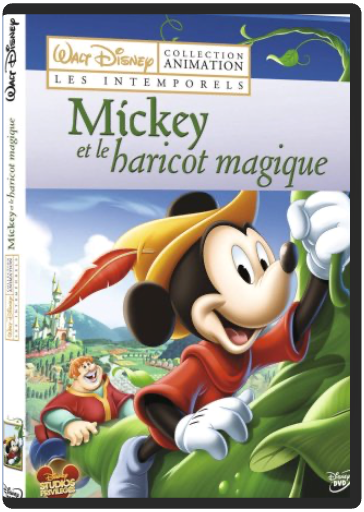

En 1868, un monstre mystérieux s'acharne sur les bateaux naviguant dans l'océan Pacifique. Alarmé par ce phénomène, le gouvernement américain décide d'envoyer une frégate afin d'élucider les étranges disparitions et éventuellement tuer le monstre... Parmi l'équipage se trouvent un fabuleux harponneur, Ned Land, un homme de science, Aromax, et son assistant. Après plusieurs mois de recherches infructueuses, la frégate est sur le point d'abandonner sa mission lorsqu'elle est attaquée par un puissant vaisseau commandé par le capitaine Némo...  Beethoven, Ottorino Respighi, Gershwin… Walt Disney désirait que Fantasia ne soit que le début d'une symphonie infinie et que l'on poursuive cette expérience en composant régulièrement de nouveaux ballets, en alliant à la magie de la musique des découvertes à venir en matière d'animation. C'est désormais chose faite. Faisant appel aux images de synthèse et aux dernières innovations technologiques, la relève artistique des studios Disney nous entraîne dans une nouvelle série d'aventures tout aussi fabuleuses que celle du premier Fantasia. On plonge en 5.1 avec des baleines qui s'envolent, on swingue en 1.85 16/9 dans les couloirs du métro new-yorkais, on suit, avec enthousiasme, les cabrioles d'un amusant petit flamant rose et, bien sûr, on retrouve notre adorable Mickey qui fait encore des siennes. Un dessin animé sur les instruments de musique, est proposé en supplément. —Sophie Wittmer  fêtez noël avec mickey et ses amis !walt disney Retrouve tes personnages Disney préférés pour de folles aventures. Pars sur les traces de Mickey, Donald et Pluto dans les "Alpinistes" et apprends à jouer au baseball avec Dingo. Une compilation de 6 courts-métrages hilarants, idéale pour toute la famille...Courts métrages :1) Mickey patine2) L'arbre de Noël de Pluto3) Donald bagarreur4) L'atelier du père Noël5) L'arbre de Noël6) Carnaval des gâteaux7) Ferdinand le taureau |  Contenu et bonus : Blu-ray 2 disques  mickey et le haricot magiquewalt disney Retrouvez des courts m?©trages irrempla?ßables, des fables et contes qui ont marqu?© des g?©n?©rations enti?®res'ĶContient¬?: - Mickey et le haricot magique (Mickey and the Beanstalk - 1947) - 4 autres courts m?©trages  Flynn, ex-programmeur informatique aigri, est vite devenu une star des salles de jeu ; ça tombe plutôt bien, car son ex-boss, soucieux de protéger un secret, se sert un beau jour d'un prototype expérimental pour dématérialiser le pauvre Flynn et l'envoyer à l'intérieur du système informatique de l'entreprise, où il ne devra son salut qu'à sa dextérité aux jeux vidéo... Succès mitigé à sa sortie en salle, ce spectacle d'avant-garde a gagné peu à peu son titre mérité de film culte ; spectacle d'une grande beauté visuelle, véritable tour de force technologique réalisé à l'époque des balbutiements de l'image de synthèse, Tron a bénéficié d'un scénario véritablement innovant, de l'apport esthétique d'artistes et de designers de talent (dont le Français Moebius), et doit en grande partie son succès à son ambiance unique, mélange de contemplation silencieuse et d'action haletante (la fameuse séquence de la course à moto) dans un univers tout en néons et en figures géométriques colorées. Le DVD était attendu depuis longtemps mais cela en valait la peine : plusieurs heures de bonus sont au rendez-vous, du documentaire d'une heure et demie aux making-of des effets spéciaux en passant par les commentaires et autres galeries de photos...—David Rault |

Julien
Collection Total:
1 983 Items
1 983 Items
Last Updated:
Dec 29, 2022
Dec 29, 2022


 Made with Delicious Library
Made with Delicious Library